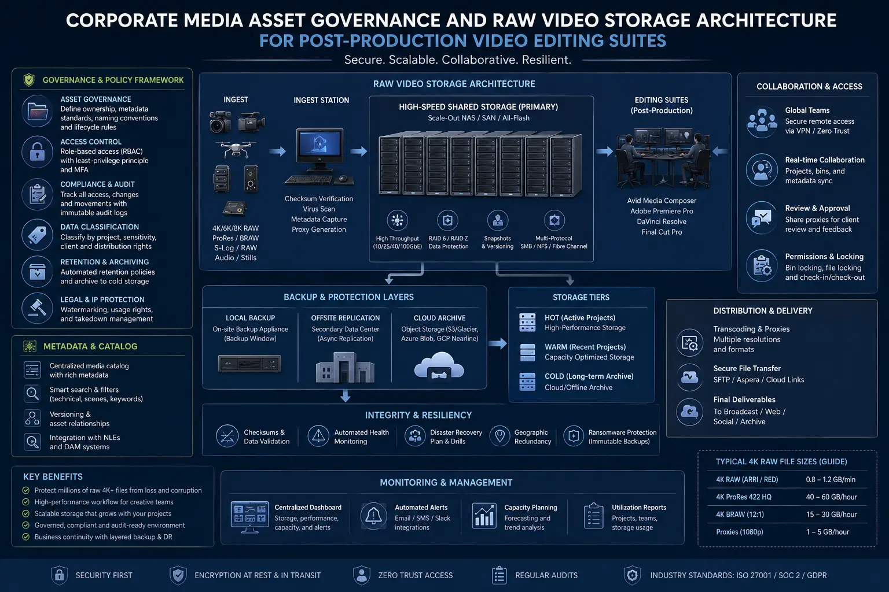
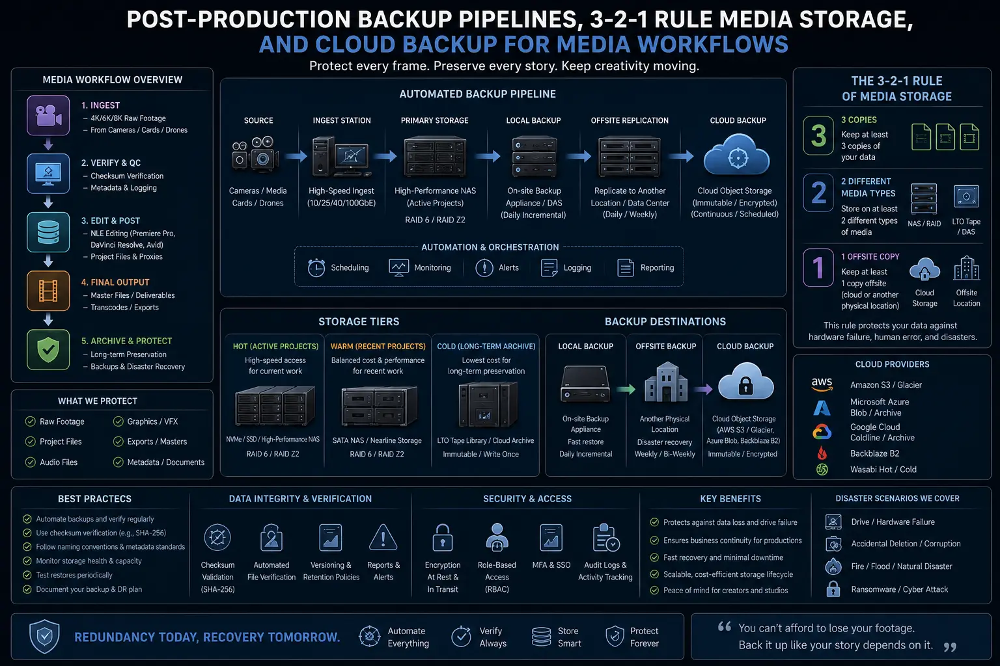

Safeguarding Millions of Raw 4K Video Files Against Drive Failure and Data Loss
The High-Stakes Reality of Modern 4K and 8K Video Storage
In modern commercial video production, data is the lifeblood of creative enterprise. A single day of shooting a high-end corporate brand video, commercial ad campaign, or executive documentary using cinema camera formats—such as REDCODE RAW, ARRI ALEXA ProRes 4444 XQ, Sony X-OCN, or Blackmagic RAW—generates multiple terabytes of uncompressed visual data. When scaled across multiple project pipelines over a year, production studios routinely handle tens of millions of raw 4K video files representing millions of rupees in production capital.
Yet, many video editing agencies and corporate media departments continue to operate under fragile storage workflows. Passing loose external hard drives across edit suites, relying on consumer desktop drives without parity protection, or delaying offsite backups exposes irreplaceable media assets to catastrophic loss. Mechanical hard drives fail at predictable statistical rates, SSD controllers corrupt under thermal stress, and camera cards can degrade during field offloading. Without robust enterprise infrastructure, a single hardware crash can instantly destroy weeks of production effort and trigger devastating legal and financial liabilities.
To eliminate these vulnerabilities, leading production environments rely on Corporate Media Asset Governance, a dedicated Raw Video Storage Architecture, and automated Post-Production Backup Pipelines. Implementing these frameworks guarantees zero data loss, streamlines editing workflows, and safeguards valuable creative IP throughout its entire operational lifecycle.
Understanding the Mechanics of Media Vulnerability
To design a resilient media infrastructure, studios must first examine why 4K media files are uniquely vulnerable compared to standard enterprise data files.
- Extreme Storage Throughput Demands: Uncompressed or minimally compressed 4K RAW video files require sustained read and write throughputs exceeding 500 MB/s to 2500 MB/s. Continuous high-bandwidth operations generate substantial thermal buildup in storage controllers and hard drive arrays, accelerating hardware fatigue and increasing the probability of sudden drive controller lockups.
- Silent Data Corruption (Bit Rot): Unlike executable code or text files that throw obvious OS errors when corrupted, high-resolution video containers can suffer from silent bit rot—where microscopic bit flips alter raw pixel data or corrupt header indices. Without active file system scrubbing, bit rot remains undetected until an editor opens a timeline months later to discover glitching frames or unreadable clip metadata.
- Fragmented Editor Workflows: In studios lacking a centralized server, editors frequently copy project media to local desktop drives or portable SSDs. This informal distribution creates multiple out-of-sync versions of project files, breaking file linking structures, cluttering storage spaces, and preventing systematic backup automation. Standardized Hard drive organization for video editors is essential to resolve this friction.
- Improper On-Set Media Offloading: The immediate period after capturing footage on set represents the point of maximum data vulnerability. Simply dragging and dropping files from camera cards using operating system file managers provides no verification that every byte was written accurately. Rigorous protocols for backing up RAW camera cards using checksum algorithms are mandatory before any media card is cleared for reuse.
Zero Data Loss Guarantee
Automated 3-2-1 redundancy pipelines and checksum-verified card offloading eliminate human error and mechanical single points of failure, protecting every single frame of camera footage.
Multi-User Editing Efficiency
High-speed 10GbE network attached storage allows lead editors, colorists, sound designers, and motion graphic artists to work concurrently off a unified central media pool without drive swapping.
Rapid Disaster Recovery
Structured hot RAID parity paired with offsite cloud mirrors ensures that even in the event of major hardware failures, active projects can be restored and operational within hours.
Long-Term Asset Preservation
Enterprise archiving tiering (LTO tape and cold cloud storage) coupled with secure video storage protocols preserves legacy client projects and brand assets for decades without degradation.

On-Set Data Ingestion & Checksum Field Protocols
Data security begins in the field long before media reaches the post-production suite. Capturing high-value commercial footage requires a disciplined Data Digital Manager (DIT) workflow dedicated to backing up RAW camera cards with mathematical precision.
Standard operating system copy commands (such as Windows Explorer or macOS Finder) skip file verification and can silently drop corrupted blocks during high-speed transfers. Professional field offloading relies on specialized software like Silverstack, ShotPut Pro, or DaVinci Resolve Data Manager, which execute bit-for-bit checksum algorithms (MD5, xxHash64, or SHA-1). The software reads the raw media card, writes it to dual target field drives simultaneously, and calculates a hash value for every block to verify that the destination copy is identical to the camera master.
Field engineers enforce a strict zero-trust card formatting policy: no camera card is ever wiped, formatted, or returned to the camera team until the footage has been successfully offloaded to at least two independent physical drives and verified by checksum logs. Additionally, field drives are stored in shockproof, anti-static hard cases during transport to the post-production studio.
Local Server Setups for High-Performance Shared Editing
Once raw assets arrive at the post-production studio, storing them on individual external hard drives creates an operational bottleneck. Enterprise post-production environments transition away from isolated drives by deploying local server setups for video editing.
A modern high-performance media server utilizes 10GbE or 25GbE Network Attached Storage (NAS) or Storage Area Networks (SAN) built with enterprise SAS HDDs or high-speed NVMe SSD pools. Server configurations employ advanced RAID (Redundant Array of Independent Disks) levels:
- RAID 6 (Dual Parity): Allows up to two hard drives to fail simultaneously within the array without any data loss or volume collapse, offering robust parity protection for large-capacity spinning disk pools.
- RAID 10 (Striped Mirroring): Combines extreme read/write performance with disk mirroring, making it the preferred configuration for editing multi-stream 4K and 8K RAW video timelines in real time.
- ZFS Storage Pools: ZFS file systems provide self-healing capability by constantly comparing data blocks against checksums, automatically repairing background bit rot during scheduled scrub operations.
By centralizing assets into high-performance local server setups for video editing, post-production teams enforce structured folder hierarchies, eliminate redundant local file duplication, and streamline project handoffs across departments.
Hot Tier (Active Edit Pool)
- Storage Media: Enterprise NVMe RAID Arrays / 10GbE Direct Storage
- Purpose: Real-time editing, color grading, and multi-stream 4K RAW playback
- Access Protocol: High-bandwidth SMB3/NFS connections for active editors
- Retention Window: Active project duration (1–60 days)
Warm Tier (Nearline Server)
- Storage Media: High-Capacity RAID 6 / RAID 60 NAS Arrays
- Purpose: Staging completed edits, project revisions, and master exports
- Access Protocol: Automated background mirror from Hot Tier
- Retention Window: Post-delivery project holding (60–180 days)
Cold Tier (Vault Archiving)
- Storage Media: LTO-8 / LTO-9 Tape Arrays & Deep Cloud Storage
- Purpose: Immutable long-term preservation and compliance archiving
- Access Protocol: Air-gapped physical storage & automated cloud sync
- Retention Window: Permanent brand asset archive (5–20+ years)

Hard Drive Organization Standards for Video Editors
Hardware protection is only half the battle; structural discipline is equally vital. Disorganized folder structures lead to missing asset relinking errors, accidental overwrites, and bloated storage utilization. Establishing mandatory Hard drive organization for video editors ensures project portability and seamless backup execution.
A standardized studio directory template is applied to every new production:
01_FOOTAGE/(Sub-divided by Camera Card, Date, and Scene)02_AUDIO/(Production Sound, Voiceover, Foley, Sound Effects, Music Tracks)03_PROJECT_FILES/(Premiere Pro, DaVinci Resolve, After Effects, Final Cut Pro)04_GRAPHICS_VFX/(Logos, Title Templates, 3D Assets, Plates, VFX Renders)05_DOCUMENTS/(Call Sheets, Scripts, Storyboards, Music Licenses, Release Forms)06_EXPORTS/(Review Drafts, Master Deliverables, Social Slices, Stills)
Standardizing folder architectures enables automated backup scripts to target critical project directories while ignoring temporary cache files, keeping Post-Production Backup Pipelines fast, predictable, and clean.
Executing the 3-2-1-1-0 Backup Pipeline Framework
To eliminate single points of failure, commercial video studios implement robust Post-Production Backup Pipelines governed by the modernized 3-2-1-1-0 redundancy strategy:
- 3 Total Copies of Data: Maintain one primary operational copy on the high-speed local NAS/SAN server, plus at least two secondary backup copies.
- 2 Different Storage Media Types: Utilize distinct storage technologies (e.g., fast NVMe/SAS disk arrays combined with magnetic LTO tape cartridges or cloud object storage) to protect against systemic hardware manufacturing defects.
- 1 Offsite Storage Copy: Store one backup copy off-site or in enterprise cloud backup for media (such as AWS S3 Glacier, Backblaze B2, or Google Cloud Storage) to guard against facility-level physical disasters such as fire, flooding, or theft.
- 1 Immutable (Air-Gapped) Copy: Maintain an offline physical tape backup or write-once-read-many (WORM) cloud lock to protect against ransomware encryption attacks.
- 0 Backup Errors: Perform regularly scheduled restore tests and automated checksum validations to confirm that backup data can be restored cleanly without corrupt files.
Leveraging hybrid cloud backup for media ensures that offsite syncing occurs automatically in the background overnight, pushing media deltas to secure data centers without interfering with daily editing bandwidth.
Enterprise Security and Secure Video Storage Protocols
Protecting media assets requires defense against unauthorized access, intellectual property leakage, and cyber threats. Establishing comprehensive secure video storage protocols protects client confidentiality and regulatory compliance:
- Role-Based Access Control (RBAC): Restrict server file access based on user credentials. Freelance editors and junior assistants are granted read-only or project-specific access, preventing accidental deletion or unauthorized copying of sensitive client footage.
- AES-256 Bit Data Encryption: Encrypt all active storage volumes and cloud backup streams both in transit and at rest, ensuring that stolen hardware or intercepted network packets remain unreadable without master keys.
- Audit Logging & File Locking: Track every file access, edit, and deletion event through automated server logs. Enable immutable file locks on master export folders so finalized deliverables cannot be modified or overwritten.
- Air-Gapped Archiving: Store physical LTO tape cartridges in climate-controlled off-site fireproof vaults, providing complete physical separation from network-connected vectors.
Conclusion
Building an unshakeable video asset workflow requires moving beyond informal storage habits. Adopting enterprise-grade Corporate Media Asset Governance, deploying a redundant Raw Video Storage Architecture, enforcing Hard drive organization for video editors, and establishing automated Post-Production Backup Pipelines guarantees that your studio's creative output remains secure against hardware failure, human error, and environmental threats.
From backing up RAW camera cards with bit-for-bit checksum verification on set to leveraging high-speed local server setups for video editing and reliable cloud backup for media, an end-to-end data strategy ensures complete peace of mind. Implementing strict secure video storage protocols protects client trust and secures your brand’s valuable visual legacy.
At The PhD Ads in Madurai, we specialize in high-end commercial video creation supported by enterprise-grade Corporate Media Asset Governance, robust Raw Video Storage Architecture, and automated backup pipelines—ensuring your high-value video assets are protected from shoot day to final release.
Key Topics
Ready to Build a Bulletproof Media Storage & Backup Architecture?
At The PhD Ads in Madurai, we help corporate brands and video teams establish enterprise-grade media asset governance, redundant local server setups, and automated 3-2-1 backup pipelines—protecting your high-value 4K RAW media assets against data loss and drive failure.
Email: team@e2o.in